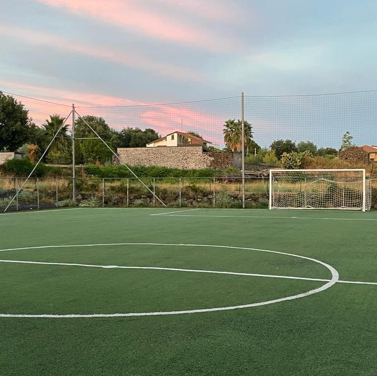

ETNA PADEL CENTER
Tra i campi in cui ho giocato (sia tornei che partitelle), è sempre stato il migliore. Due campi a 5, due campi a 7, spogliatoi e bagni puliti e ordinati. Spesso danno anche la possibilità di giocare oltre la fascia oraria designata (compatibilmente con le prenotazioni di altre persone per lo stesso campo).
Voto: 9.5
Via Alessandro Volta, 6 San Giovanni la Punta (CT)Consigliatissimo.

ZENIA SPORTING CENTER
Struttura moderna, con un solo campo a 7 e un solo campo a 5. Personale molto disponibile, spesso fanno anche rimanere ben più dell'ora designata per la partita (in relazione anche alla fascia oraria scelta).
Voto: 9
Via Simeto, 5 San Gregorio di Catania (CT)Consigliatissimo.
I CAMPETTI
Fino a non molto tempo fa era il campo di riferimento per qualunque partita. Dopo la pandemia hanno però aumentato il prezzo e cominciato ad essere molto più fiscali sul rispetto dell'orario. Ciononostante, la struttura -che presenta 3 campi di calcio a 7 e un campo di calcio a 5- rimane comunque molto valida.
Voto: 8.5
Via Bottazzi, 15 Aci Bonaccorsi (CT)Consigliato.
CENTRO SPORTIVO MILLENNIUM
La struttura non è così moderna, ma hanno da poco messo il tappeto di erba sintetica nuovo. Vi è un campo da calcio a 7 e un campo da calcio a 5 e il personale è molto gentile.
Voto: 7.5
Via Comunità Europea, 13 CataniaAbbastanza consigliato.
KOSS
La struttura presenta un solo campo a 7 e l'erba sintetica non è nemmeno di eccelsa qualità; tuttavia, spesso fanno giocare anche più dell'ora per la quale si paga.
Voto: 6.5
Via Francesco Mannino Cefaly, 2 CataniaSe avete di meglio, evitate.